ساختمانها
همهٔ ساختمانها، به همان دستهبندی فروشگاه. هزینه و زمان برای هر سطح است. «چند تا» بیشترین تعدادی است که در هر سطح دیوانخانه میتوان ساخت. تصویرها همهٔ سطحها را نشان میدهند؛ هر جا ساختمانی در روستاهای کوهستانی و روستاهای دیگر شکل دیگری دارد، هر دو آمده است.
تولید
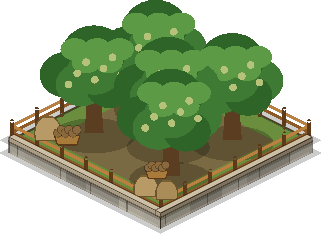
باغ گردو
درختان گردوی نامدار هورامان. گردو میدهد، پول این دره. برای برداشت بزنید.
تولید: گردو · چند تا: ۱ / ۲ / ۲ / ۳ / ۴ · اندازه ۳×۳
در روستاهای کوهستانی (نودشه، هورامان تخت):
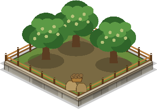
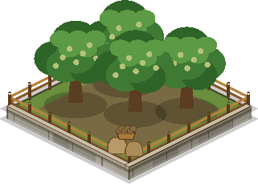

در روستاهای دیگر (هجیج، شهرزور):
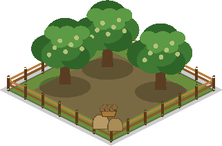
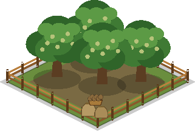
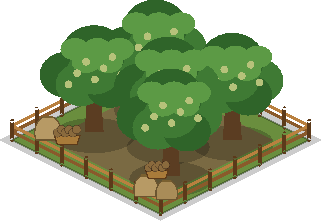
| سطح | هزینه | زمان | جان | تولید در دقیقه | گنجایش |
|---|---|---|---|---|---|
| ۱ | ۱۵۰ | ۸ ثانیه | ۳۰۰ | ۵۰ | ۳۰۰ |
| ۲ | ۵۰۰ | ۳۰ ثانیه | ۴۵۰ | ۹۰ | ۷۰۰ |
| ۳ | ۱٬۵۰۰ | ۲ دقیقه | ۶۵۰ | ۱۵۰ | ۱٬۵۰۰ |
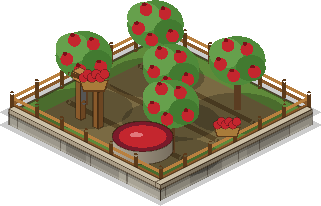
آبانارگیر
باغ انار و چرخشت سنگی: انار را به آب انار برای آموزش نیروها تبدیل میکند. برای برداشت بزنید.
تولید: آب انار · چند تا: ۱ / ۲ / ۲ / ۳ / ۴ · اندازه ۳×۳
در روستاهای کوهستانی (نودشه، هورامان تخت):
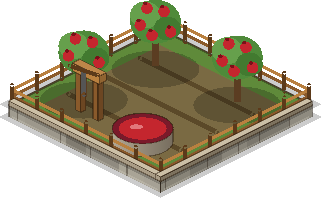
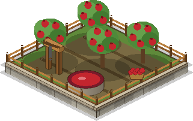

در روستاهای دیگر (هجیج، شهرزور):
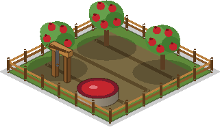
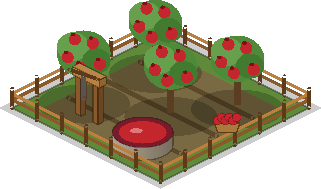
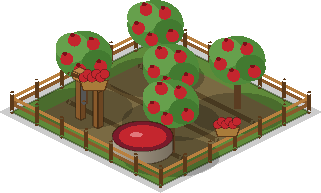
| سطح | هزینه | زمان | جان | تولید در دقیقه | گنجایش |
|---|---|---|---|---|---|
| ۱ | ۱۵۰ | ۸ ثانیه | ۳۰۰ | ۴۵ | ۳۰۰ |
| ۲ | ۵۰۰ | ۳۰ ثانیه | ۴۵۰ | ۸۰ | ۷۰۰ |
| ۳ | ۱٬۵۰۰ | ۲ دقیقه | ۶۵۰ | ۱۳۰ | ۱٬۵۰۰ |
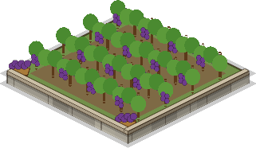
تاکستان
تاکهای روی تراس. انگور کالای بازرگانی است: در بازار بفروشید یا برای ارتقا خرج کنید.
تولید: انگور · چند تا: ۱ / ۱ / ۲ / ۲ / ۳ · اندازه ۳×۳
در روستاهای کوهستانی (نودشه، هورامان تخت):
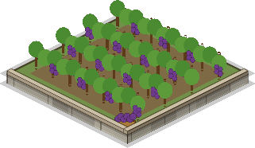

در روستاهای دیگر (هجیج، شهرزور):
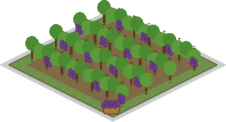
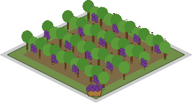
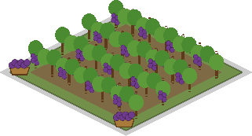
| سطح | هزینه | زمان | جان | تولید در دقیقه | گنجایش |
|---|---|---|---|---|---|
| ۱ | ۲۰۰ | ۱۰ ثانیه | ۲۸۰ | ۶ | ۸۰ |
| ۲ | ۶۰۰ | ۳۵ ثانیه | ۴۲۰ | ۱۰ | ۱۶۰ |
| ۳ | ۱٬۸۰۰ | ۲ دقیقه | ۶۰۰ | ۱۶ | ۳۰۰ |
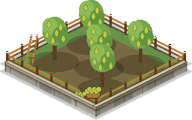
باغ گلابی
گلابیهای شیرین کوهستان. کالای بازار و ارتقای میدان.
تولید: گلابی · چند تا: ۰ / ۱ / ۱ / ۲ / ۲ · اندازه ۳×۳
در روستاهای کوهستانی (نودشه، هورامان تخت):
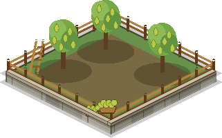
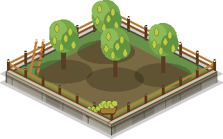

در روستاهای دیگر (هجیج، شهرزور):
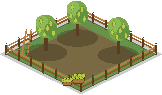
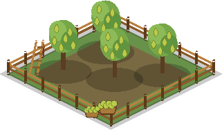
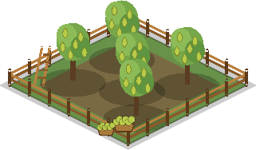
| سطح | هزینه | زمان | جان | تولید در دقیقه | گنجایش |
|---|---|---|---|---|---|
| ۱ | ۲۵۰ | ۱۰ ثانیه | ۲۸۰ | ۵ | ۷۰ |
| ۲ | ۷۰۰ | ۴۰ ثانیه | ۴۲۰ | ۹ | ۱۴۰ |
| ۳ | ۲٬۰۰۰ | ۲ دقیقه | ۶۰۰ | ۱۴ | ۲۶۰ |
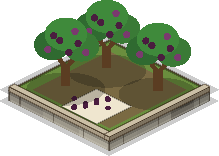
درختان توت
توت خشک، خوراک همیشگی هورامان. کالای بازرگانی و لازم برای کارگاه کلاش.
تولید: توت · چند تا: ۰ / ۱ / ۱ / ۲ / ۲ · اندازه ۲×۲
در روستاهای کوهستانی (نودشه، هورامان تخت):
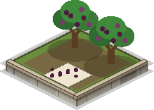


در روستاهای دیگر (هجیج، شهرزور):
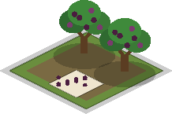

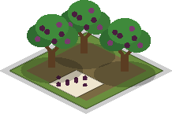
| سطح | هزینه | زمان | جان | تولید در دقیقه | گنجایش |
|---|---|---|---|---|---|
| ۱ | ۲۰۰ | ۸ ثانیه | ۲۲۰ | ۴ | ۶۰ |
| ۲ | ۶۰۰ | ۳۰ ثانیه | ۳۳۰ | ۷ | ۱۲۰ |
| ۳ | ۱٬۶۰۰ | ۲ دقیقه | ۴۸۰ | ۱۱ | ۲۲۰ |

درختان انجیر
انجیر باارزشترین میوه است. کالای بازار و ارتقای دیوانخانه.
تولید: انجیر · چند تا: ۰ / ۱ / ۱ / ۲ / ۲ · اندازه ۲×۲
در روستاهای کوهستانی (نودشه، هورامان تخت):
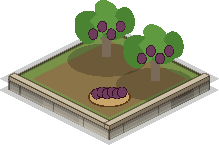

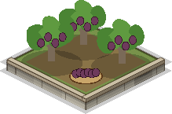
در روستاهای دیگر (هجیج، شهرزور):
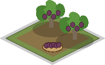
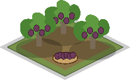

| سطح | هزینه | زمان | جان | تولید در دقیقه | گنجایش |
|---|---|---|---|---|---|
| ۱ | ۳۰۰ | ۱۰ ثانیه | ۲۲۰ | ۳ | ۵۰ |
| ۲ | ۸۰۰ | ۴۰ ثانیه | ۳۳۰ | ۵ | ۱۰۰ |
| ۳ | ۲٬۲۰۰ | ۲ دقیقه | ۴۸۰ | ۸ | ۱۸۰ |

کارگاه کلاش
هنرمندان کلاش سفید را با دست میبافند. بسیار کند و بسیار گرانبها: کلاش ساختوساز را تند میکند.
تولید: کلاش · چند تا: ۰ / ۱ / ۱ / ۱ / ۲ · اندازه ۲×۲
در روستاهای کوهستانی (نودشه، هورامان تخت):
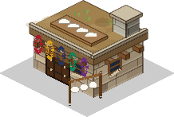
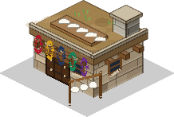
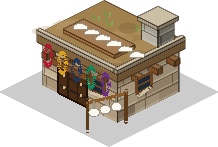
در روستاهای دیگر (هجیج، شهرزور):
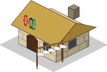
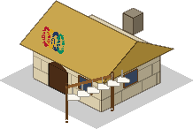
| سطح | هزینه | زمان | جان | تولید در دقیقه | گنجایش |
|---|---|---|---|---|---|
| ۱ | ۴۰۰ ۳۰ | ۲۰ ثانیه | ۲۶۰ | ۰٫۱ | ۵ |
| ۲ | ۱٬۲۰۰ ۸۰ | ۱ دقیقه | ۳۸۰ | ۰٫۱۵ | ۵ |
| ۳ | ۳٬۰۰۰ ۱۵۰ | ۳ دقیقه | ۵۴۰ | ۰٫۲ | ۵ |
کشاورزی و آذوقه
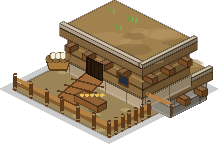
لانهٔ مرغ
لانهای سنگی و چوببافت. مرغها بیشتر سال تخم میگذارند و در زمستان کمتر.
چند تا: ۱ / ۱ / ۲ / ۲ / ۳ · اندازه ۲×۲
در روستاهای کوهستانی (نودشه، هورامان تخت):
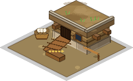
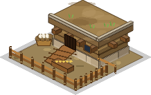

در روستاهای دیگر (هجیج، شهرزور):
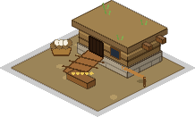
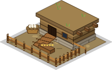
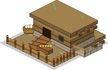
| سطح | هزینه | زمان | جان |
|---|---|---|---|
| ۱ | ۱۲۰ | ۶ ثانیه | ۲۰۰ |
| ۲ | ۴۰۰ | ۲۵ ثانیه | ۳۰۰ |
| ۳ | ۱٬۱۰۰ | ۱ دقیقه | ۴۲۰ |
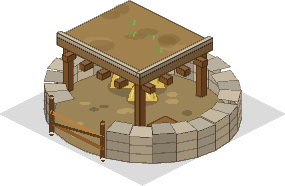
آغل بز و گوسفند
آغلی خشکهچین با گوشهای سرپوشیده. جای بزها و گوسفندهاست و لو زمستانشان را نگه میدارد.
چند تا: ۱ / ۲ / ۲ / ۳ / ۳ · اندازه ۳×۳
در روستاهای کوهستانی (نودشه، هورامان تخت):
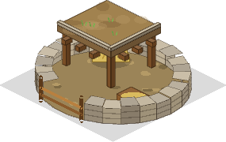
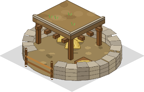

در روستاهای دیگر (هجیج، شهرزور):
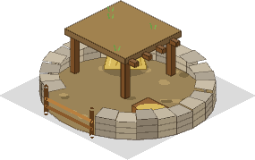
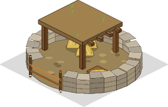
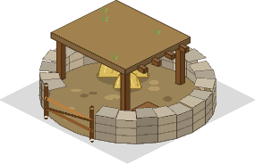
| سطح | هزینه | زمان | جان | جای علوفه |
|---|---|---|---|---|
| ۱ | ۲۵۰ | ۱۰ ثانیه | ۳۲۰ | ۱۵۰ |
| ۲ | ۸۰۰ | ۴۰ ثانیه | ۴۶۰ | ۳۰۰ |
| ۳ | ۲٬۲۰۰ | ۲ دقیقه | ۶۴۰ | ۵۰۰ |
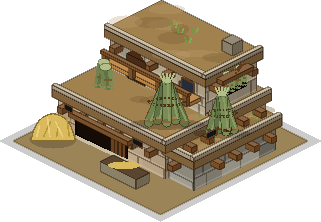
گور (طویله)
گور (طویله): اتاق گرم و سنگی دام، کنار خانه یا زیر آن. در زمستان همهٔ دامها، الاغ هم، باید داخل بخوابند؛ لو در انبارِ بالای سرش میماند.
نیازمند دیوانخانه سطح ۱ · چند تا: ۱ / ۱ / ۲ / ۲ / ۲ · اندازه ۳×۳
در روستاهای کوهستانی (نودشه، هورامان تخت):
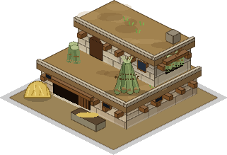

در روستاهای دیگر (هجیج، شهرزور):
| سطح | هزینه | زمان | جان | جای علوفه |
|---|---|---|---|---|
| ۱ | ۳۰۰ | ۱۲ ثانیه | ۳۸۰ | ۲۰۰ |
| ۲ | ۱٬۰۰۰ | ۴۵ ثانیه | ۵۴۰ | ۴۰۰ |
| ۳ | ۲٬۶۰۰ | ۲ دقیقه | ۷۶۰ | ۷۰۰ |
لبنیاتخانه
اتاقی خنک با مَشک، پارچههای پنیر و سینیهای خشککردن. شیر روز را پیش از آنکه بِگَندد به پنیر، کره و کشک تبدیل میکند.
چند تا: ۱ / ۱ / ۱ / ۲ / ۲ · اندازه ۲×۲
در روستاهای کوهستانی (نودشه، هورامان تخت):

در روستاهای دیگر (هجیج، شهرزور):
| سطح | هزینه | زمان | جان |
|---|---|---|---|
| ۱ | ۳۰۰ | ۱۰ ثانیه | ۲۶۰ |
| ۲ | ۹۰۰ | ۴۰ ثانیه | ۳۸۰ |
| ۳ | ۲٬۴۰۰ | ۲ دقیقه | ۵۴۰ |

کشتزار گندم
گندم و جو روی تراسی از زمین. در تابستان و پاییز میرسد. برای بهار بعد بذر نگه دارید وگرنه کشتزار خالی میماند.
تولید: غله · چند تا: ۲ / ۳ / ۴ / ۵ / ۶ · اندازه ۳×۳
در روستاهای کوهستانی (نودشه، هورامان تخت):
در روستاهای دیگر (هجیج، شهرزور):
| سطح | هزینه | زمان | جان | تولید در دقیقه | گنجایش |
|---|---|---|---|---|---|
| ۱ | ۱۵۰ | ۸ ثانیه | ۲۲۰ | ۰٫۲۵ | ۱۲۰ |
| ۲ | ۵۰۰ | ۳۰ ثانیه | ۳۳۰ | ۰٫۴ | ۲۴۰ |
| ۳ | ۱٬۴۰۰ | ۲ دقیقه | ۴۸۰ | ۰٫۶ | ۴۰۰ |
دامنهٔ لو
دامنهای پرشیب که لو در آن میروید. آخر تابستان درو و پایین آورده میشود: خوراک زمستان گله. خانوادههایی که هوار دارند، لوی بیشتری آن بالا جمع میکنند.
تولید: لو · چند تا: ۱ / ۲ / ۳ / ۳ / ۴ · اندازه ۳×۳
| سطح | هزینه | زمان | جان | تولید در دقیقه | گنجایش |
|---|---|---|---|---|---|
| ۱ | ۱۲۰ | ۸ ثانیه | ۲۰۰ | ۰٫۶ | ۲۰۰ |
| ۲ | ۴۰۰ | ۳۰ ثانیه | ۳۰۰ | ۱ | ۴۰۰ |
| ۳ | ۱٬۲۰۰ | ۲ دقیقه | ۴۲۰ | ۱٫۵ | ۶۵۰ |

هیزمدان
هیزمِ هرس باغ و دامنهٔ بلوط، چیدهشده زیر سقف. جز در زمستان در هر فصل هیزم جمع میکند.
تولید: هیزم · چند تا: ۱ / ۱ / ۲ / ۲ / ۳ · اندازه ۲×۲
در روستاهای کوهستانی (نودشه، هورامان تخت):
در روستاهای دیگر (هجیج، شهرزور):
| سطح | هزینه | زمان | جان | تولید در دقیقه | گنجایش | جای هیزم |
|---|---|---|---|---|---|---|
| ۱ | ۱۵۰ | ۸ ثانیه | ۲۲۰ | ۰٫۱۵ | ۸۰ | ۱۵۰ |
| ۲ | ۵۰۰ | ۳۰ ثانیه | ۳۲۰ | ۰٫۲۵ | ۱۶۰ | ۳۰۰ |
| ۳ | ۱٬۳۰۰ | ۱ دقیقه | ۴۶۰ | ۰٫۴ | ۲۶۰ | ۵۰۰ |

باغچهٔ سبزی
شلغم، گوجه و سبزی روی تراسی کوچکِ آبدار. سبزی تازه زود خراب میشود: شلمین بسازید یا برای دلمه خشکش کنید.
تولید: سبزی تازه · چند تا: ۱ / ۲ / ۲ / ۳ / ۳ · اندازه ۲×۲
در روستاهای کوهستانی (نودشه، هورامان تخت):
در روستاهای دیگر (هجیج، شهرزور):
| سطح | هزینه | زمان | جان | تولید در دقیقه | گنجایش |
|---|---|---|---|---|---|
| ۱ | ۱۲۰ | ۸ ثانیه | ۱۸۰ | ۰٫۳ | ۶۰ |
| ۲ | ۴۰۰ | ۳۰ ثانیه | ۲۷۰ | ۰٫۵ | ۱۲۰ |
| ۳ | ۱٬۱۰۰ | ۱ دقیقه | ۳۸۰ | ۰٫۸ | ۲۰۰ |

درختان بادام
چند درخت بادام در کنار باغ. بادام در پاییز چیده میشود و تمام زمستان میماند.
تولید: بادام · چند تا: ۰ / ۱ / ۱ / ۲ / ۲ · اندازه ۲×۲
در روستاهای کوهستانی (نودشه، هورامان تخت):
در روستاهای دیگر (هجیج، شهرزور):
| سطح | هزینه | زمان | جان | تولید در دقیقه | گنجایش |
|---|---|---|---|---|---|
| ۱ | ۲۵۰ | ۱۰ ثانیه | ۲۰۰ | ۰٫۱۵ | ۶۰ |
| ۲ | ۷۰۰ | ۴۰ ثانیه | ۳۰۰ | ۰٫۲۵ | ۱۲۰ |
| ۳ | ۱٬۸۰۰ | ۲ دقیقه | ۴۲۰ | ۰٫۴ | ۲۰۰ |

کندوهای عسل
کندوهای چوبی و گلی روی لبهای آفتابگیر. عسل در بهار و تابستان؛ زمستان با کره خورده میشود.
تولید: عسل · چند تا: ۱ / ۲ / ۳ / ۴ / ۵ · اندازه ۱×۱
در روستاهای کوهستانی (نودشه، هورامان تخت):
در روستاهای دیگر (هجیج، شهرزور):
| سطح | هزینه | زمان | جان | تولید در دقیقه | گنجایش |
|---|---|---|---|---|---|
| ۱ | ۱۵۰ | ۶ ثانیه | ۸۰ | ۰٫۰۸ | ۳۰ |
| ۲ | ۴۵۰ | ۲۵ ثانیه | ۱۲۰ | ۰٫۱۴ | ۶۰ |
| ۳ | ۱٬۲۰۰ | ۱ دقیقه | ۱۶۰ | ۰٫۲۲ | ۱۰۰ |
انبار آذوقه
اتاقی نیمهزیرزمینی با خمرههای گلی غله و کوزه. جای بیشتری برای هر خوراک زمستان میدهد.
چند تا: ۱ / ۱ / ۲ / ۲ / ۳ · اندازه ۲×۲
در روستاهای کوهستانی (نودشه، هورامان تخت):

در روستاهای دیگر (هجیج، شهرزور):
| سطح | هزینه | زمان | جان | جای خوراک |
|---|---|---|---|---|
| ۱ | ۲۵۰ | ۱۰ ثانیه | ۳۰۰ | ۱۵۰ |
| ۲ | ۸۰۰ | ۴۰ ثانیه | ۴۵۰ | ۳۰۰ |
| ۳ | ۲٬۲۰۰ | ۲ دقیقه | ۶۴۰ | ۵۰۰ |
آشپزخانه
آتش پختوپز، دیگها و سینیهای خشککردن. هر روز خوراکیهایی را که سفارش دادهاید تا وقتی مواد هست میسازد: اول خوراکیهای خشک، بعد شلمین، روغن حیوانی و دوشاو، و بعد غذاهای پرمایهتر زمستان.
چند تا: ۱ / ۱ / ۱ / ۱ / ۱ · اندازه ۲×۲
در روستاهای کوهستانی (نودشه، هورامان تخت):

در روستاهای دیگر (هجیج، شهرزور):
| سطح | هزینه | زمان | جان | نوبت در روز |
|---|---|---|---|---|
| ۱ | ۲۰۰ | ۸ ثانیه | ۲۶۰ | ۴ |
| ۲ | ۹۰۰ | ۴۰ ثانیه | ۳۸۰ | ۸ |
| ۳ | ۲٬۴۰۰ | ۲ دقیقه | ۵۴۰ | ۱۴ |
انبار و بازرگانی
انبار گردو
اتاقی چوبی و محکم که گردوهایتان را سالم نگه میدارد.
چند تا: ۱ / ۱ / ۲ / ۲ / ۳ · اندازه ۳×۳
در روستاهای کوهستانی (نودشه، هورامان تخت):

در روستاهای دیگر (هجیج، شهرزور):
| سطح | هزینه | زمان | جان | گنجایش |
|---|---|---|---|---|
| ۱ | ۲۵۰ | ۱۰ ثانیه | ۴۰۰ | ۲٬۰۰۰ |
| ۲ | ۱٬۰۰۰ | ۴۰ ثانیه | ۷۰۰ | ۵٬۰۰۰ |
| ۳ | ۳٬۰۰۰ | ۲ دقیقه | ۱٬۱۰۰ | ۱۰٬۰۰۰ |
سردابهٔ آب انار
خمرههای خنک سفالی که آب انار را نگه میدارند.
چند تا: ۱ / ۱ / ۲ / ۲ / ۳ · اندازه ۳×۳
در روستاهای کوهستانی (نودشه، هورامان تخت):

در روستاهای دیگر (هجیج، شهرزور):
| سطح | هزینه | زمان | جان | گنجایش |
|---|---|---|---|---|
| ۱ | ۲۵۰ | ۱۰ ثانیه | ۴۰۰ | ۲٬۰۰۰ |
| ۲ | ۱٬۰۰۰ | ۴۰ ثانیه | ۷۰۰ | ۵٬۰۰۰ |
| ۳ | ۳٬۰۰۰ | ۲ دقیقه | ۱٬۱۰۰ | ۱۰٬۰۰۰ |

انبار
انبار نیمهزیرزمینی که هر چهار میوه (انگور، گلابی، توت، انجیر) در آن جا میگیرند.
چند تا: ۱ / ۱ / ۲ / ۲ / ۳ · اندازه ۳×۳
در روستاهای کوهستانی (نودشه، هورامان تخت):
در روستاهای دیگر (هجیج، شهرزور):
| سطح | هزینه | زمان | جان | گنجایش |
|---|---|---|---|---|
| ۱ | ۳۰۰ | ۱۰ ثانیه | ۳۸۰ | ۲۰۰ |
| ۲ | ۱٬۰۰۰ | ۴۰ ثانیه | ۶۴۰ | ۵۰۰ |
| ۳ | ۳٬۰۰۰ | ۲ دقیقه | ۱٬۰۰۰ | ۱٬۰۰۰ |

بازار
میوههایتان را به گردو یا آب انار بفروشید. هر ده دقیقه یک میوه پرتقاضا و میوهای دیگر فراوان میشود.
چند تا: ۱ / ۱ / ۱ / ۱ / ۱ · اندازه ۳×۳
در روستاهای کوهستانی (نودشه، هورامان تخت):
در روستاهای دیگر (هجیج، شهرزور):
| سطح | هزینه | زمان | جان | افزایش |
|---|---|---|---|---|
| ۱ | ۳۰۰ | ۱۰ ثانیه | ۳۵۰ | ۰٪ |
| ۲ | ۱٬۲۰۰ ۴۰ | ۴۵ ثانیه | ۵۵۰ | ۱۰٪ |
| ۳ | ۳٬۵۰۰ ۶۰ | ۲ دقیقه | ۸۰۰ | ۲۰٪ |
نگهبانی

میدان
محل آموزش. نگهبانهای خانه مهارتهایشان را اینجا یاد میگیرند (سطح ۴ به دیوانخانهٔ ۴ نیاز دارد).
نیازمند دیوانخانه سطح ۱ · چند تا: ۱ / ۱ / ۲ / ۲ / ۳ · اندازه ۳×۳
در روستاهای کوهستانی (نودشه، هورامان تخت):
در روستاهای دیگر (هجیج، شهرزور):
| سطح | هزینه | زمان | جان |
|---|---|---|---|
| ۱ | ۲۰۰ | ۱۰ ثانیه | ۳۵۰ |
| ۲ | ۸۰۰ | ۴۵ ثانیه | ۵۵۰ |
| ۳ | ۲٬۵۰۰ ۵۰ | ۲ دقیقه | ۸۰۰ |
| ۴ | ۶٬۰۰۰ ۱۲۰ | ۳ دقیقه | ۱٬۰۰۰ |
آتشدان دورهمی
اهل خانه دور این آتش جمع میشوند: جا برای یک نفر دیگر.
چند تا: ۱ / ۱ / ۲ / ۲ / ۲ · اندازه ۴×۴
در روستاهای کوهستانی (نودشه، هورامان تخت):

در روستاهای دیگر (هجیج، شهرزور):
| سطح | هزینه | زمان | جان | جا |
|---|---|---|---|---|
| ۱ | ۱۵۰ | ۱۰ ثانیه | ۳۵۰ | ۲۴ |
| ۲ | ۶۰۰ | ۴۵ ثانیه | ۵۵۰ | ۳۶ |
| ۳ | ۱٬۸۰۰ | ۲ دقیقه | ۸۰۰ | ۵۰ |
آتشگاه قهرمانان
سایهبانی فرشانداخته که بزرگان روستا میان یورشها آنجا استراحت میکنند. کاک احمد و دایه گلبهار اینجا زندگی میکنند: در بخش لشکر آموزششان بدهید و درمانشان کنید.
نیازمند دیوانخانه سطح ۳ · چند تا: ۰ / ۰ / ۱ / ۱ / ۱ · اندازه ۳×۳
| سطح | هزینه | زمان | جان |
|---|---|---|---|
| ۱ | ۱٬۸۰۰ ۶۰۰ | ۱ دقیقه | ۵۰۰ |

کلبهٔ بنّا
هر کلبه یک بنّای دیگر به شما میدهد.
چند تا: ۲ / ۲ / ۳ / ۳ / ۴ · اندازه ۲×۲
در روستاهای کوهستانی (نودشه، هورامان تخت):
در روستاهای دیگر (هجیج، شهرزور):
| سطح | هزینه | زمان | جان |
|---|---|---|---|
| ۱ | ۲۵۰ | ۵ ثانیه | ۲۵۰ |
دفاع
برج دیدهبانی
برج سنگی بلند با کماندار تیزبین. از بلندی دورتر میزند.
چند تا: ۱ / ۲ / ۳ / ۴ / ۵ · اندازه ۳×۳
در روستاهای کوهستانی (نودشه، هورامان تخت):

در روستاهای دیگر (هجیج، شهرزور):
| سطح | هزینه | زمان | جان | تولید در دقیقه | آسیب | برد |
|---|---|---|---|---|---|---|
| ۱ | ۳۰۰ | ۱۰ ثانیه | ۳۸۰ | ۰٫۸ | ۱۰ | ۷ |
| ۲ | ۹۰۰ | ۴۵ ثانیه | ۵۲۰ | ۰٫۸ | ۱۴ | ۷ |
| ۳ | ۲٬۵۰۰ | ۲ دقیقه | ۷۲۰ | ۰٫۸ | ۲۰ | ۷ |

برج فلاخن
فلاخنزنی تند با آسیب کم. از بلندی دورتر میزند.
چند تا: ۰ / ۱ / ۲ / ۳ / ۴ · اندازه ۲×۲
در روستاهای کوهستانی (نودشه، هورامان تخت):
در روستاهای دیگر (هجیج، شهرزور):
| سطح | هزینه | زمان | جان | تولید در دقیقه | آسیب | برد |
|---|---|---|---|---|---|---|
| ۱ | ۲۰۰ | ۱۰ ثانیه | ۲۶۰ | ۰٫۳۵ | ۴ | ۵٫۵ |
| ۲ | ۷۰۰ | ۴۵ ثانیه | ۳۸۰ | ۰٫۳۵ | ۷ | ۵٫۵ |
| ۳ | ۲٬۰۰۰ | ۲ دقیقه | ۵۲۰ | ۰٫۳۵ | ۱۰ | ۵٫۵ |

منجنیق سنگ
کند، با آسیب ناحیهای. هدفهای نزدیک را نمیزند. از بلندی دورتر میزند.
چند تا: ۰ / ۰ / ۱ / ۲ / ۳ · اندازه ۳×۳
در روستاهای کوهستانی (نودشه، هورامان تخت):
در روستاهای دیگر (هجیج، شهرزور):
| سطح | هزینه | زمان | جان | تولید در دقیقه | آسیب | برد |
|---|---|---|---|---|---|---|
| ۱ | ۴۰۰ | ۱۵ ثانیه | ۴۰۰ | ۳ | ۱۷ | ۹ |
| ۲ | ۱٬۲۰۰ | ۱ دقیقه | ۵۶۰ | ۳ | ۲۶ | ۹ |
| ۳ | ۳٬۲۰۰ | ۳ دقیقه | ۷۸۰ | ۳ | ۳۷ | ۹ |

نگهبانخانه
برجخانهٔ کوچک سنگی با بام گلی هموار. دیدهبانهای کوهستان با جلیقهٔ نمدی کُلَبال اینجا زندگی میکنند. وقتی مهاجمان نزدیک شوند بیرون میآیند و با نیزه میجنگند.
نیازمند دیوانخانه سطح ۲ · چند تا: ۰ / ۱ / ۲ / ۲ / ۳ · اندازه ۲×۲
| سطح | هزینه | زمان | جان | واحد |
|---|---|---|---|---|
| ۱ | ۳۰۰ | ۱۰ ثانیه | ۳۴۰ | ۲ |
| ۲ | ۹۰۰ | ۴۵ ثانیه | ۴۸۰ | ۲ |
| ۳ | ۲٬۴۰۰ | ۲ دقیقه | ۶۸۰ | ۳ |
سگدانی
آغلی کوتاه و سنگی با سایهبان چوبی. سگهای گلهٔ اینجا تند و تیزند و مهاجمانِ نزدیک را دنبال میکنند.
نیازمند دیوانخانه سطح ۳ · چند تا: ۰ / ۰ / ۱ / ۱ / ۲ · اندازه ۲×۲

| سطح | هزینه | زمان | جان | واحد |
|---|---|---|---|---|
| ۱ | ۳۵۰ | ۱۰ ثانیه | ۳۰۰ | ۱ |
| ۲ | ۱٬۰۰۰ | ۴۵ ثانیه | ۴۲۰ | ۲ |
| ۳ | ۲٬۶۰۰ | ۲ دقیقه | ۶۰۰ | ۲ |
چاه چشمه
چشمهای با حلقهٔ سنگی. جایی که جویباری نیست، دریچهٔ سیل را میشود کنار آن ساخت.
نیازمند دیوانخانه سطح ۲ · چند تا: ۰ / ۱ / ۱ / ۲ / ۲ · اندازه ۲×۲
| سطح | هزینه | زمان | جان |
|---|---|---|---|
| ۱ | ۱۲۰ | ۶ ثانیه | ۲۶۰ |
تلهها
خارهای پوست گردو
پوستهای خاردار گردو که پنهان روی راه ریختهاند. آسیب کم میزنند و مهاجمانِ رهگذر را کند میکنند. بعد از هر نبرد خودشان دوباره آماده میشوند.
نیازمند دیوانخانه سطح ۱ · چند تا: ۲ / ۳ / ۴ / ۵ / ۶ · اندازه ۱×۱
| سطح | هزینه | زمان | جان |
|---|---|---|---|
| ۱ | ۶۰ | فوری | ۶۰ |
کندوها
زنبورهای عسل هورامان. وقتی مهاجمان نزدیک شوند، زنبورها ۴۰٪ کندشان میکنند و چند ثانیه نیش میزنند. دود زنبورها را آرام میکند. خودش دوباره آماده میشود.
نیازمند دیوانخانه سطح ۲ · چند تا: ۰ / ۱ / ۲ / ۲ / ۳ · اندازه ۱×۱

| سطح | هزینه | زمان | جان |
|---|---|---|---|
| ۱ | ۲۰۰ | فوری | ۶۰ |
| ۲ | ۶۰۰ | فوری | ۶۰ |

تختهسنگهای غلتان
تختهسنگی روی گوهای چوبی. وقتی مهاجمان نزدیک شوند، از شیب پایین میغلتد (یا در زمین هموار بهسمت آنها) و به هرچه سر راهش باشد میخورد. خودش دوباره آماده میشود.
نیازمند دیوانخانه سطح ۲ · چند تا: ۰ / ۱ / ۱ / ۲ / ۳ · اندازه ۱×۱
| سطح | هزینه | زمان | جان |
|---|---|---|---|
| ۱ | ۲۵۰ | فوری | ۶۰ |
| ۲ | ۷۵۰ | فوری | ۶۰ |
دریچهٔ سیل
دریچهای چوبی. کنارش جویبار یا رودخانه، یا یک چاه چشمه لازم است. وقتی مهاجمان بازش کنند، زمین اطراف را آب میگیرد: نیروها عقب رانده و کند میشوند. خودش دوباره آماده میشود.
نیازمند دیوانخانه سطح ۳ · چند تا: ۰ / ۰ / ۱ / ۱ / ۲ · اندازه ۱×۱
| سطح | هزینه | زمان | جان |
|---|---|---|---|
| ۱ | ۴۰۰ | فوری | ۶۰ |
بهمنساز
فقط در زمستان و یک بار در هر یورش: بعد از غرشی هشداردهنده، دیواری از برف نواری از دامنهٔ بالا را فرا میگیرد و هرکس در آن باشد زخمی و گیج میشود.
نیازمند دیوانخانه سطح ۴ · چند تا: ۰ / ۰ / ۰ / ۱ / ۱ · اندازه ۱×۱ · دامنهٔ کوه میخواهد: در دشت شهرزور ساخته نمیشود.
| سطح | هزینه | زمان | جان |
|---|---|---|---|
| ۱ | ۹۰۰ | فوری | ۶۰ |
دیوارها
دیوار چوبی (پرچین)
تیرکهای سپیدار با شاخههای بافته. ارزان و زود ساخته میشود، اما در رطوبت میپوسد و زود آتش میگیرد.
نیازمند دیوانخانه سطح ۱ · اندازه ۱×۱

| سطح | هزینه | زمان | جان |
|---|---|---|---|
| ۱ | ۱۰ | فوری | ۱۵۰ |
| ۲ | ۵۰ | فوری | ۳۰۰ |
| ۳ | ۲۰۰ | فوری | ۵۰۰ |

دیوار گلی
گل و کاه کوبیدهشده و صاف. ارزان و گرم است، اما باران سنگین آن را میشوید.
نیازمند دیوانخانه سطح ۲ · اندازه ۱×۱
| سطح | هزینه | زمان | جان |
|---|---|---|---|
| ۱ | ۱۴ | فوری | ۲۴۰ |
| ۲ | ۷۰ | فوری | ۴۸۰ |
| ۳ | ۲۸۰ | فوری | ۸۰۰ |
دیوار خشکهچین
سنگهایی که بدون ملات روی هم چیده شدهاند، مثل پلههای باغی کوهستان. آب از لابهلای آن رد میشود. ارتقایش فوری است.
نیازمند دیوانخانه سطح ۳ · چند تا: ۸۵ / ۱۰۰ / ۱۲۰ / ۱۳۵ / ۱۵۰ · اندازه ۱×۱
در روستاهای کوهستانی (نودشه، هورامان تخت):

در روستاهای دیگر (هجیج، شهرزور):
| سطح | هزینه | زمان | جان |
|---|---|---|---|
| ۱ | ۲۰ | فوری | ۳۰۰ |
| ۲ | ۱۰۰ | فوری | ۶۰۰ |
| ۳ | ۴۰۰ | فوری | ۱٬۰۰۰ |

دیوار آجری
آجر پخته در ردیفهای منظم. در برابر باران پایدار است، اما کوره به هیزم زیادی نیاز دارد.
نیازمند دیوانخانه سطح ۴ · اندازه ۱×۱
| سطح | هزینه | زمان | جان |
|---|---|---|---|
| ۱ | ۲۸ | فوری | ۳۶۰ |
| ۲ | ۱۴۰ | فوری | ۷۲۰ |
| ۳ | ۵۶۰ | فوری | ۱٬۲۰۰ |

دیوار سنگی با ملات
سنگ تراشیده با ملات آهک و میانپُر قلوهسنگ. محکمترین دیوار است و یادگرفتنش دیرتر میرسد.
نیازمند دیوانخانه سطح ۵ · اندازه ۱×۱
| سطح | هزینه | زمان | جان |
|---|---|---|---|
| ۱ | ۴۴ | فوری | ۴۸۰ |
| ۲ | ۲۲۰ | فوری | ۹۶۰ |
| ۳ | ۸۸۰ | فوری | ۱٬۶۰۰ |
اردوگاه
سیاهچادر
چادر کوتاه موی بزِ چوپانها با تیرک و طناب. جای چوپانهاست (دو نفر برای هر آغل) و کمی پشم و لبنیات نگه میدارد. چوپان بیشتر یعنی آغل بیشتر.
نیازمند دیوانخانه سطح ۱ · در اردوگاه تابستانی ساخته میشود · اندازه ۳×۳

| سطح | هزینه | زمان | جان | گنجایش |
|---|---|---|---|---|
| ۱ | ۲۰۰ | ۸ ثانیه | ۲۶۰ | ۱۰۰ |
| ۲ | ۶۰۰ | ۲۵ ثانیه | ۳۸۰ | ۲۰۰ |
| ۳ | ۱٬۵۰۰ | ۱ دقیقه | ۵۴۰ | ۳۵۰ |
آغل
آغل گرد سنگچین برای گوسفند و بز، با سرپناهی کوچک. در تابستان گله پشم و لبنیات میدهد که در آغلها و چادرها نگه داشته میشود.
نیازمند دیوانخانه سطح ۱ · در اردوگاه تابستانی ساخته میشود · اندازه ۴×۴

| سطح | هزینه | زمان | جان | گنجایش |
|---|---|---|---|---|
| ۱ | ۳۰۰ | ۱۰ ثانیه | ۳۰۰ | ۱۰۰ |
| ۲ | ۸۰۰ | ۳۰ ثانیه | ۴۴۰ | ۲۰۰ |
| ۳ | ۲٬۰۰۰ | ۱ دقیقه | ۶۲۰ | ۳۵۰ |

کارگاه نمد
کلبهٔ سنگی که نمد کُلَبال را در آن میکوبند و خشک میکنند. با پشم و گردو زره نمدی را پژوهش کنید: جان همهٔ نیروها در نبرد بیشتر میشود.
نیازمند دیوانخانه سطح ۱ · در اردوگاه تابستانی ساخته میشود · اندازه ۳×۳
| سطح | هزینه | زمان | جان |
|---|---|---|---|
| ۱ | ۳۰۰ | ۱۰ ثانیه | ۳۲۰ |
| ۲ | ۹۰۰ | ۴۰ ثانیه | ۴۶۰ |
| ۳ | ۲٬۲۰۰ | ۲ دقیقه | ۶۴۰ |